计算机视觉 · 第 6 章 卷积神经网络
6.2 卷积神经网络
有了 6.1 节的卷积运算，这一节把它组装成一个完整的网络。线索是「结构 → 三种层 → 整体堆叠方式」：先看卷积神经网络由哪几种层构成，再逐一看卷积层怎么提取特征、汇聚层为什么能带来不变性、全连接层最后怎么把特征变成分类结果，最后回到整体，看这些层是如何交叉堆叠成一个深层网络的。
1. 卷积神经网络由哪些层构成
卷积神经网络一般由卷积层、汇聚层和全连接层构成，它的出发点很直接：用卷积代替全连接。
替换之后带来了两个结构上的特性，这也正是 6.1 节末尾提到的那两个：
- 局部连接：每个神经元都只和前一层中某个局部窗口内的神经元相连，构成一个局部连接网络；一个神经元不再「看」整幅图，只看一个小窗口。
- 权重共享：作为参数的卷积核对同一层上的所有神经元都是相同的，也就是所有同颜色的连线上的权重是相同的。
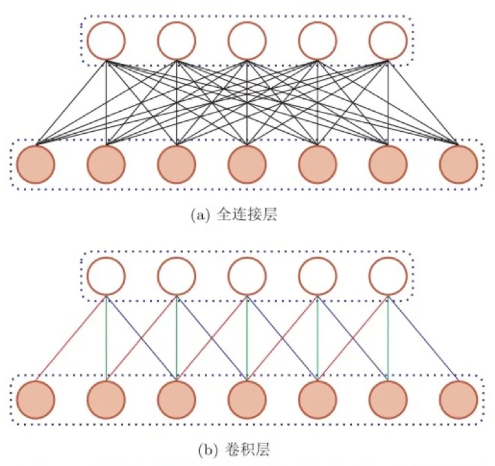
把这两种层按「提取特征 → 压缩特征 → 做出判断」的顺序串起来，就得到卷积神经网络的整体结构：输入图像先经过若干卷积层得到特征图，再经过降采样层（也就是汇聚层）把特征图变小，如此反复，最后接到全连接层和输出层（全连接 + Softmax 激活）上完成分类。
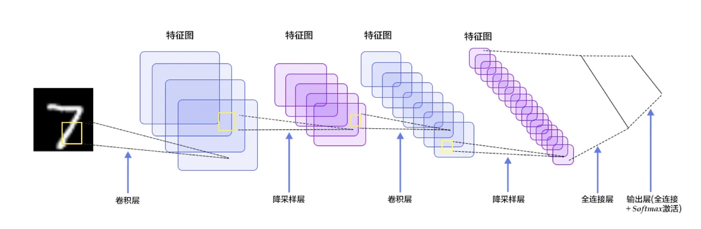
接下来三节分别把这三种层讲清楚。
2. 卷积层：结构与参数
卷积层的作用是提取一个局部区域的特征，不同的卷积核相当于不同的特征提取器。一个卷积层的结构可以用三组张量描述：
- 输入特征组：X ∈ RM×N×D，M、N 是特征图的高和宽，D 是通道数（输入图像的 D 就是颜色通道数）；
- 输出特征组：Y ∈ RM′×N′×P，P 是这个卷积层输出的特征图个数，也就是卷积核的个数；
- 卷积核：W ∈ RU×V×P×D，U、V 是卷积核的高和宽，P 和 D 分别对应输出通道与输入通道。
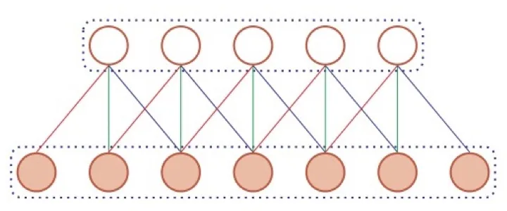
注意卷积核是四维的：每一个输出通道 P 都要配一套完整的 D 个卷积核，分别对应输入的 D 个通道，最后把这 D 个结果加起来，再加上一个偏置，才得到这个输出通道上的一张特征图。
3. 一个卷积核的计算
先用一个具体例子把上面这套记号落到实处。课件给的是：输入图像大小为 8 × 8、有三个通道；卷积核大小为 3 × 3、也有三个通道，因此这个卷积核本身是一个 3 × 3 × 3 的小立方体。
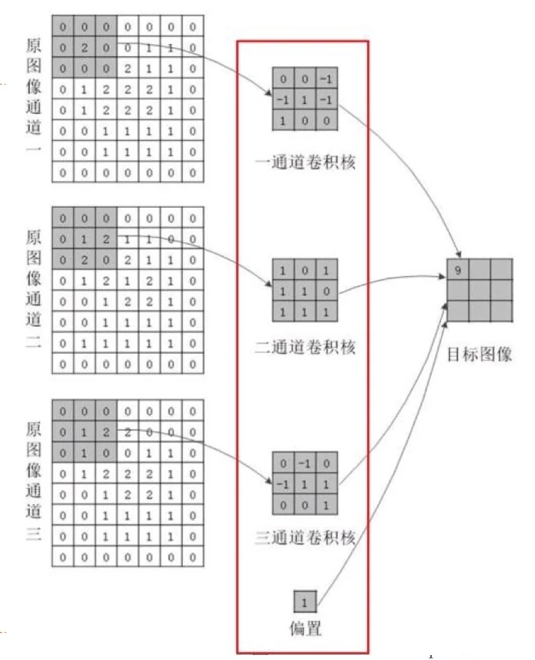
计算过程是：卷积核的三个通道分别盖在输入图像的三个通道上，各自做一次 3 × 3 的加权求和，再把三个结果相加，加上偏置，得到输出特征图上的一个值；卷积核在 8 × 8 的输入上滑动，就得到一整张输出特征图。因为只有一个卷积核，所以输出特征只有一个通道。这个例子里的参数个数是
(3 × 3 × 3 + 1) × 1 = 28
其中括号里的「+ 1」是每个卷积核配一个偏置。这里可以顺手体会一下权重共享的收益：无论输入图像多大，这个卷积核始终只有 3 × 3 × 3 = 27 个权重加 1 个偏置——换成全连接层，参数量会随着图像尺寸一起膨胀。
4. 多个卷积核的计算
一个卷积核只能提取一种特征，要提取多种特征就要用多个卷积核，每个卷积核产生输出中的一个通道。课件给了一个多卷积核的例子：输入经过零填充后为 7 × 7 × 3，两个 3 × 3 × 3 的卷积核 W0、W1（各带一个 1 × 1 × 1 的偏置 b0、b1），步长为 2，输出是 3 × 3 × 2。
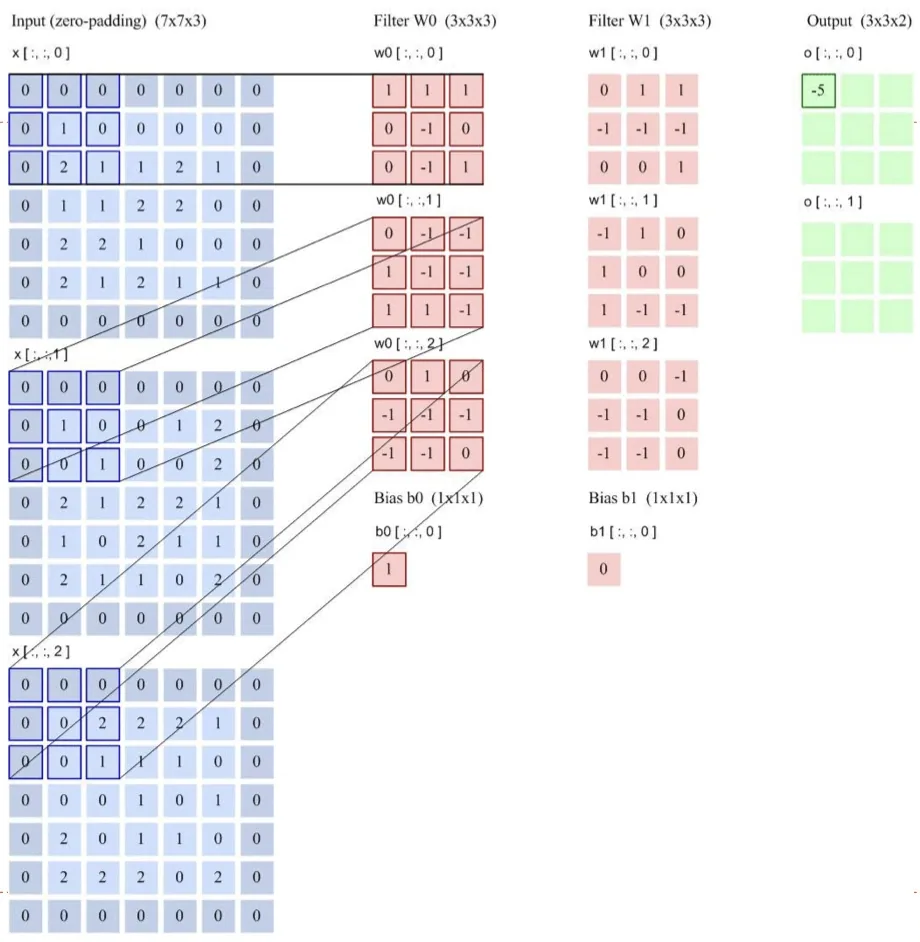
输出尺寸可以用 6.1 节的公式核对：⌊(7 − 3) / 2⌋ + 1 = 3，所以两个方向的输出都是 3；通道数等于卷积核的个数 2。这说明输出通道数由卷积核个数决定，与输入通道数无关——输入通道数只影响每个卷积核的「厚度」。
把「一个卷积核的计算」写成公式，再套上多个输出通道，就得到卷积层的映射关系。记第 d 个输入通道为 Xd、第 p 个输出通道为 Yp，第 p 个输出通道在第 d 个输入通道上的卷积核为 Wp,d、偏置为 bp，则
Yp = f( Σd=1D Wp,d ⊗ Xd + bp )
其中 ⊗ 表示卷积，f 是激活函数。多个卷积核就是把这个过程重复 P 遍，每个 p 得到一个输出通道。
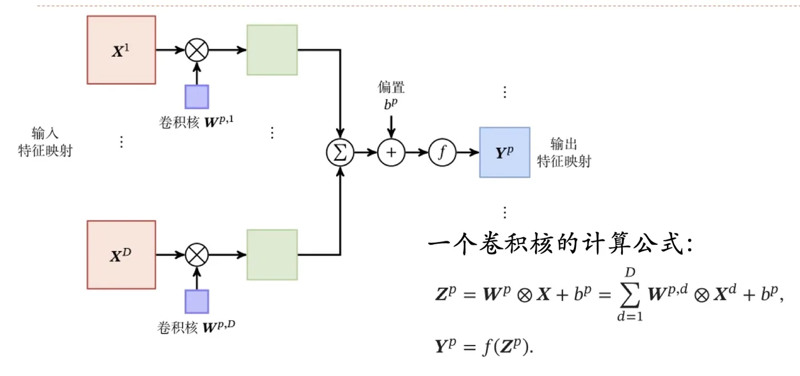
5. 卷积层到底在提取什么
在网络结构中引入卷积层的目的主要是进行图像的特征提取。课件特别强调了一句：卷积操作不是矩阵相乘，而是将卷积核放在输入矩阵上，对应位置相乘然后再相加，之后在输入矩阵上滑动，这样就得到了提取的特征图。它体现了两个特性：局部感知与权重共享。
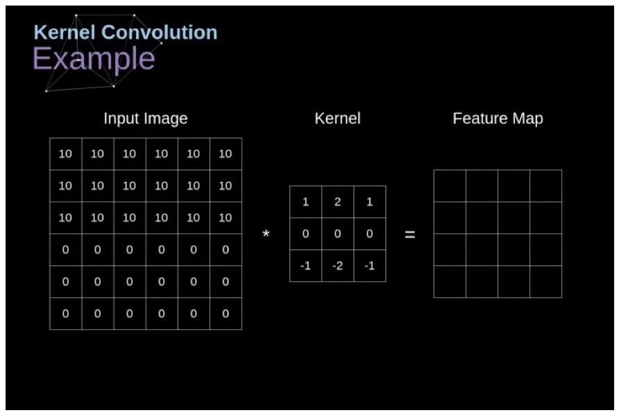
「提取特征」听起来抽象，课件用一个能算的例子把它讲明白了——提取图像中的垂直边缘。
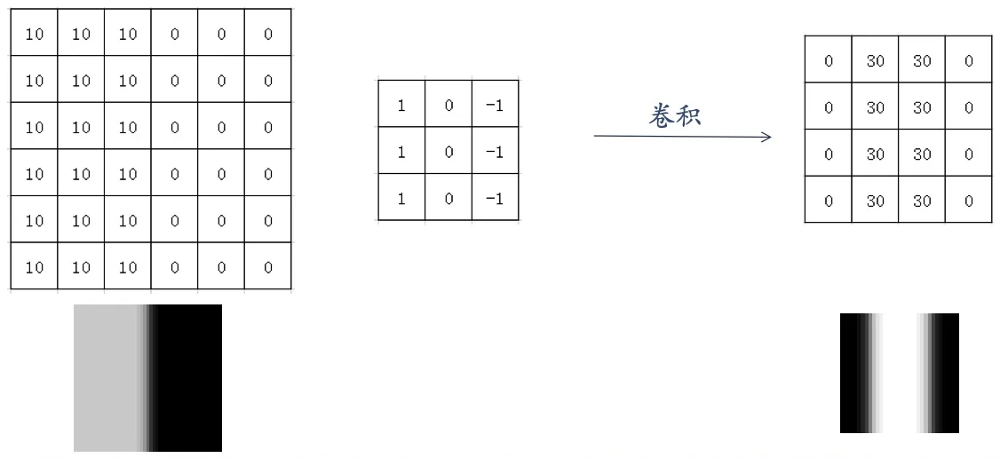
课件随即给出了这个例子的代码实现，用 PyTorch 定义一个卷积层，把上面那个卷积核的参数直接赋给卷积核，步长取 1、padding 取 0。
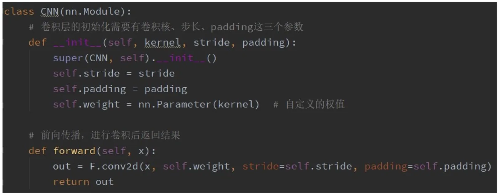
这个过程分成几步：先定义输入灰度图——它其实就是一幅黑白分明的图像，白色与黑色两部分之间构成了一个垂直的边；再给定卷积核参数，使其能够提取出垂直的边缘特征；然后初始化卷积层（步长 1、padding 0），把灰度图送进去做卷积；最后把输出的特征图可视化出来。
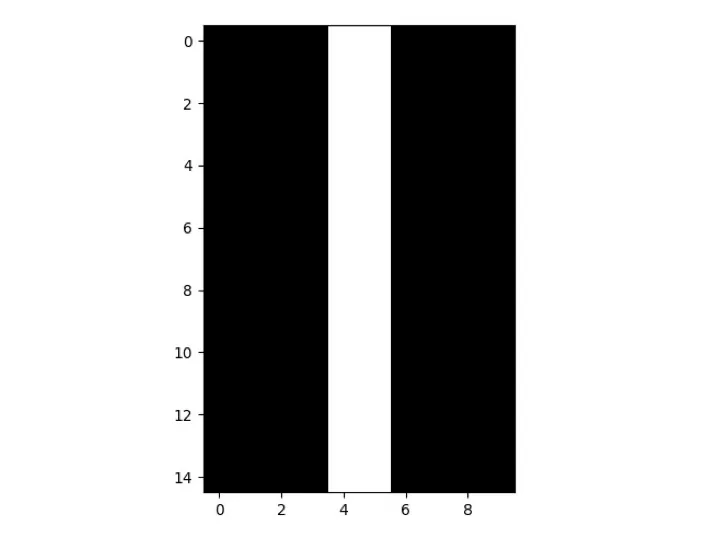
结果正如预期：输入图像的边缘被很好地检测了出来。这个例子最重要的启示不是「边缘检测」本身，而是卷积核的内容决定了它提取什么特征——手工设计好的卷积核可以提取边缘，那么在深层网络里，这些卷积核的数值完全可以交给网络自己去学，越深的层学到的特征就越抽象。
6. 汇聚层：特征选择与降采样
汇聚层也叫池化层、下采样层（降采样层），作用是进行特征选择、降低特征数量。在卷积神经网络中引入池化层，主要有两个原因：
- 减少运算量：特征图变小，后续层的计算量和参数量都随之下降；
- 实现不变性：带来平移不变性、旋转不变性和尺度不变性，从而提高模型的泛化能力。
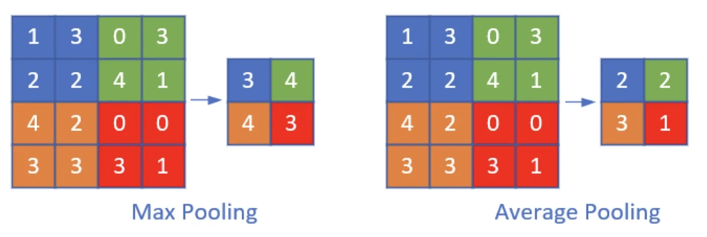
最常用的是最大池化：把一个 2 × 2 的池化核放在特征图上，取池化核覆盖范围内最大的那个元素作为输出，然后按步长滑动。课件给出的例子中，池化核大小为 2 × 2、步长为 2，也就是每个 2 × 2 的小块输出一个值，特征图的边长正好减半。
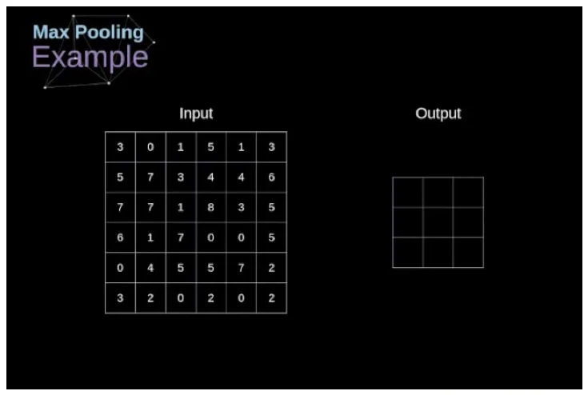
把池化核的大小与步长都取 2，效果就是「四格取一」：输入中每 2 × 2 的区域压成一个数，输出尺寸正好是输入的一半。这也解释了后面的例子里 16 × 16 会变成 8 × 8、8 × 8 会变成 4 × 4。
7. 池化的三种不变性
池化之所以能提高泛化能力，关键在于它对输入的小幅扰动不敏感。课件用三组实验分别演示了平移、旋转、尺度三种不变性。
（1）平移不变性
上下两幅都是 16 × 16 的图片，里面都有一个数字 1，区别只是上面的 1 偏左一点、下面的偏右一点。经过大小为 2 × 2、步长为 2 的最大池化之后，得到的 8 × 8 特征矩阵是相同的：主要特征被捕获到了，问题的规模从 16 × 16 降到 8 × 8，同时还具有了平移不变性。
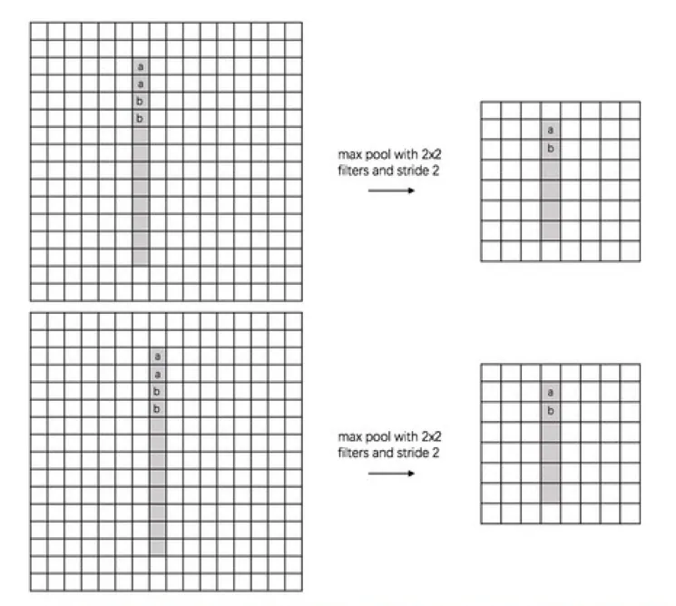
课件还写了一段代码来验证这件事：定义两幅 8 × 6 的灰度图 a 和 b，其中 b 是 a 向右平移一格得到的；创建一个池化核大小为 2 的最大池化层，把 a、b 送进去，两幅图得到的输出形状都是 4 × 3，而且可视化结果完全一样。这从数值上确认了「平移一格不影响池化后的特征」。
（2）旋转不变性
以汉字「一」的识别为例：上下两幅图中，「一」相对水平方向有一定的倾斜角，相当于做了一次旋转；但经过两次 2 × 2、步长为 2 的池化操作后，得到的特征矩阵仍然是相同的。
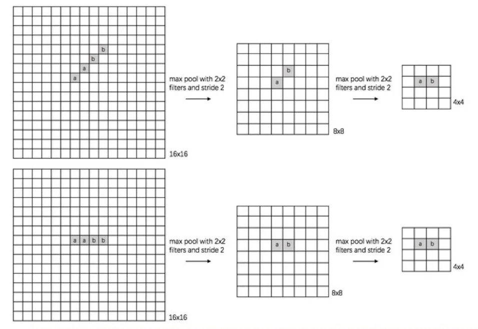
课件同样给了验证：定义两幅 4 × 4 的灰度图 a 和 b，b 是 a 顺时针旋转 45 度得到的；经过最大池化层后，outA 与 outB 的结果图一样，而且尺寸都变成了 2 × 2。
（3）尺度不变性
再看数字 0 的识别：上下两幅图的区别在于 0 的尺度不一样（一大一小）。经过两次最大池化之后，得到的特征矩阵同样是相同的。课件里的验证用的是两幅 8 × 8 的灰度图，其中 b 的白色圈是 a 的白色圈缩小后形成的；池化之后 outA 与 outB 的特征图变得一样，尺寸都变成 4 × 4。
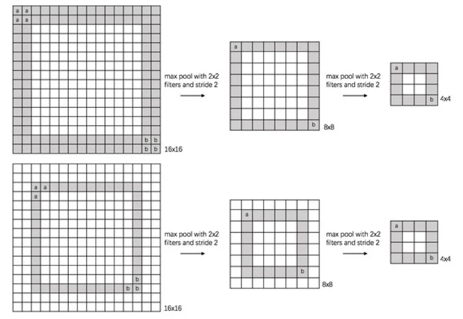
三组实验讲的是同一件事：池化保留的是「某个区域内有没有强响应、有多强」，而不关心这个响应具体落在区域内的哪个位置、朝向如何、大小如何。这正是它能同时带来平移、旋转、尺度三种不变性的原因，也是「特征选择、降低特征数量」这句定义的实际含义。
当然，这种不变性是有限度的：池化核只有 2 × 2 时，位置的一点点差别是看不出来的；但如果物体移出了整个池化窗口，或者变化幅度远超池化核的覆盖范围，特征还是会变。所以课件说的是「一定程度上的不变性」。
8. 全连接层：把特征整合成判断
全连接层的作用主要是将网络提取到的特征整合到一起。它的每个节点都与上一层所有的节点相连，所以全连接的参数会特别多——这也是 6.1 节开头那个「参数爆炸」问题在卷积神经网络里的残留部分。
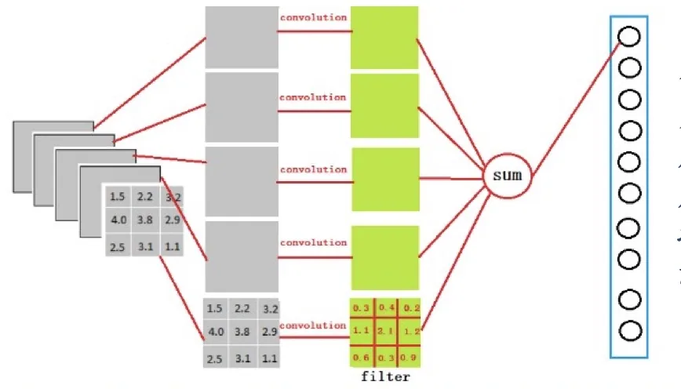
课件给了一个很好的对照：全连接实际上和卷积操作有点类似，只是全连接时「卷积核」的大小与上一层输出的特征图大小相同——假如上一层的输出特征图是 5 × 5，那么在全连接层中卷积核的大小就是 5 × 5，这样一次卷积就把整张特征图压成了一个值。换句话说，全连接层可以看作一种「卷积核覆盖整个输入」的特例。
在卷积神经网络中，大部分网络的结构有两层以上的全连接层，这是为了更好地拟合非线性数据。它们的分工很清楚：全连接层之前的网络层主要负责提取特征，全连接层负责分类。
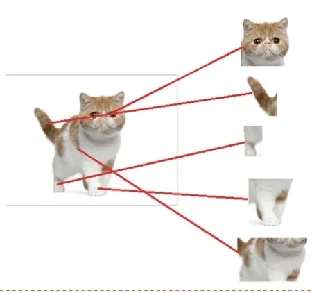
把「整合特征」具体化，就是课件里那只猫：红色的神经元表示对应的特征被找到，经过全连接层把这些特征组合到一起，发现最符合这些特征的是猫，网络就预测当前的输入图片是猫。
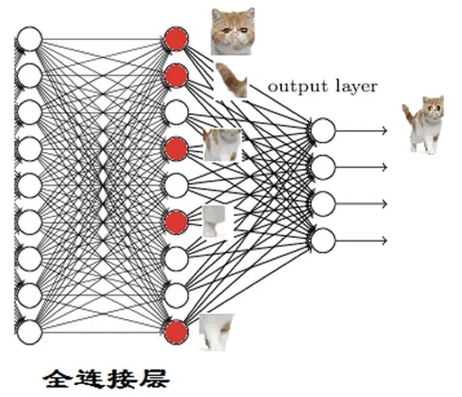
再往前一层看，答案更清楚：要得到「猫头」这个特征，就得先找到猫眼、耳朵、鼻子、嘴巴等子特征；而这些子特征（例如猫眼）正是通过前面的卷积层、池化层得来的。于是整个网络形成了一个层次结构——浅层学到边、角、纹理一类的低级特征，中间层把它们组合成眼睛、耳朵一类的部件，深层再组合成猫头甚至整只猫。
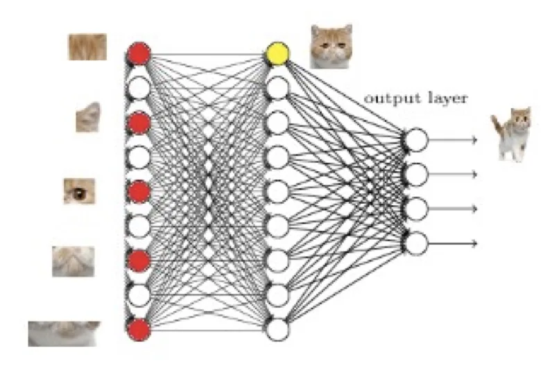
9. 整体的堆叠方式
最后把三种层放回整体。一个卷积块是连续 M 个卷积层和 b 个汇聚层（M 通常设置为 2 ∼ 5，b 为 0 或 1）；一个卷积网络中可以堆叠 N 个连续的卷积块，再接着 K 个全连接层（N 的取值区间比较大，比如 1 ∼ 100 或者更大；K 一般为 0 ∼ 2）。
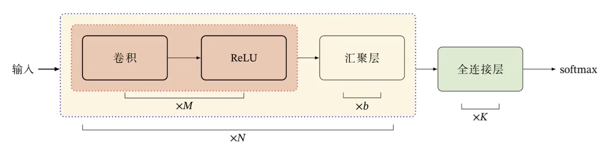
课件还给出了这个结构近些年的三个趋势，它们解释了后面 6.4 节那些经典网络为什么长成那样：
- 趋向于使用更小的卷积核（如 1 × 1、3 × 3）以及更深的结构（超过 50 层）；
- 由于卷积操作本身越来越灵活（比如可以设置不同步长），汇聚层的作用越来越小，因此逐渐趋向于全卷积网络——连全连接层也不再需要。
本节小结
- 卷积神经网络用卷积代替全连接，一般由卷积层、汇聚层（池化层/降采样层）和全连接层构成，整体流程是「卷积 → 降采样 → 全连接 → Softmax 输出」，其中前两种层带来局部连接与权重共享。
- 卷积层的三组张量是输入 X ∈ RM×N×D、输出 Y ∈ RM′×N′×P、卷积核 W ∈ RU×V×P×D；映射关系为 Yp = f(Σd Wp,d ⊗ Xd + bp)。输出通道数由卷积核个数决定，与输入通道数无关。
- 单个卷积核的计算示例：输入 8 × 8 × 3、卷积核 3 × 3 × 3，参数个数 (3 × 3 × 3 + 1) × 1 = 28，输出只有一个通道；多个卷积核的例子：零填充后的 7 × 7 × 3 输入、两个 3 × 3 × 3 卷积核、步长 2，输出 3 × 3 × 2。
- 卷积操作不是矩阵相乘，而是把卷积核放到输入上「对应位置相乘再相加」然后滑动；卷积核的内容决定它提取什么特征——课件用一个专门设计的卷积核从灰度图中提取出了垂直边缘。
- 汇聚层做特征选择、降低特征数量，引入它有两个原因：减少运算量，以及获得不变性。最大池化取池化核覆盖范围内的最大值；池化核与步长都取 2 时，输出尺寸减半。
- 池化的三种不变性都有实验支撑：平移（数字 1 偏左/偏右，16 × 16 → 8 × 8 特征矩阵相同）、旋转（倾斜的「一」，两次池化后特征相同）、尺度（大小不同的 0，两次池化后特征相同）。它保留的是「区域内有没有强响应」，而不是响应的精确位置。
- 全连接层把特征整合到一起做分类，参数很多；它可以看作卷积核大小等于输入特征图大小的卷积。网络是层次化的：浅层学低级特征，中间层组合成部件，深层组合成物体。
- 堆叠方式是「N 个卷积块 + K 个全连接层」，卷积块为 M 个卷积层加 b 个汇聚层（M 取 2 ∼ 5，b 取 0 或 1）；趋势是小卷积核、更深的结构、以及汇聚层逐渐弱化的全卷积网络。